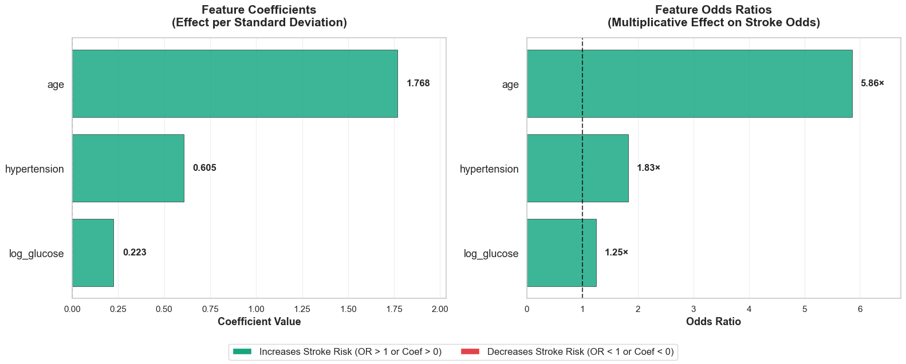

A complete machine learning pipeline that predicts stroke probability from clinical and demographic data. The model prioritizes high recall (80% sensitivity) to catch actual stroke cases, making it suitable as a screening tool for preventive healthcare programs.
Stroke is a leading cause of death and disability worldwide, creating immense personal, family, and economic burdens, with millions suffering long-term impairments and significant costs. Beyond its human toll, stroke places a substantial strain on the healthcare industry, generating billions in direct and indirect expenditures across emergency care, specialized treatment, rehabilitation, and long-term disease management. These demands strain critical resources, expose workforce and access challenges, and reveal gaps in care for diverse populations, underscoring the need for integrated, data-driven approaches that improve early identification, care coordination, and outcomes. Addressing the growing stroke burden requires sustained investment in infrastructure, clinical capacity, and prevention strategies to reduce disability, improve equity, and control rising healthcare costs.
The Objective:Build a predictive model that can identify high-risk stroke patients based on readily available clinical data.
This project employed a rigorous and reproducible data science workflow grounded in statistical best practices. The model's design and evaluation were guided by the clinical objective of prioritizing the identification of true stroke cases, accepting a higher false-positive rate to support early intervention and risk mitigation.
The analysis was conducted on a dataset of 5,109 patient records, each described by 11 demographic and clinical features, including age, body mass index (BMI), average glucose levels, and relevant medical history indicators. An initial exploratory data analysis (EDA) phase was performed to assess feature distributions, identify outliers and class imbalance, evaluate relationships between predictors and stroke occurrence, and uncover potential data quality issues such as missing or anomalous values. This analysis informed preprocessing decisions such as feature transformation, handling of missing values, and variable selection prior to model training.
Data preprocessing included domain-informed handling of missing BMI values. The dataset was then split into training and testing sets using a stratified 80/20 split to preserve the original class distribution and ensure unbiased model evaluation. During the split I preformed feature engineering, categorical encoding (work type, residence, smoking status), class imbalance correction, and numerical scaling for model compatibility. Splitting the data early in the process is imperative to prevent data leakage which can inflate the model's performance metrics and create a false sense of effectiveness.
A logistic regression model was developed using statsmodels, incorporating balanced class weights to address the low prevalence of stroke cases in the dataset. This stage focused on statistical inference, leveraging statsmodels’ detailed diagnostic outputs to evaluate coefficient significance through hypothesis testing. The results were used to identify predictors that were both statistically meaningful and clinically relevant, informing feature selection for the final predictive model.
To ensure the statistical validity and interpretability of the logistic regression model, key modeling assumptions were explicitly evaluated prior to final training. The linearity assumption between continuous predictors and the log-odds of stroke was assessed to confirm that feature transformations appropriately captured non-linear effects. In addition, multicollinearity among predictors was examined using Variance Inflation Factor (VIF) analysis to ensure stable coefficient estimates and reliable inference. These checks helped prevent distorted effect sizes and improved confidence in the model’s conclusions.
Using scikit-learn, the finalized feature set was used to train and test a logistic regression model. Performance was assessed using accuracy, precision, recall, F1-score, and ROC-AUC to capture both overall classification quality and class-specific behavior. Confusion matrix analysis was used to explicitly evaluate false positive and false negative outcomes, supporting informed trade-off analysis in a clinical risk setting.
Rather than relying on the default probability threshold, the model’s decision boundary was systematically optimized to reflect clinical priorities. Threshold tuning focused on maximizing sensitivity for stroke detection, recognizing that the cost of missing true stroke cases outweighs the impact of increased false positives. This step translated probabilistic model outputs into actionable classification decisions, ensuring the model’s operational behavior aligned with real-world healthcare screening and early intervention requirements.
The model identified several strong predictors of stroke risk:
Strong Generalization
With minimal train-test performance gaps in this highly imbalanced healthcare dataset the model demonstrates strong classification performance. Close alignment across all metrics, particularly ROC-AUC and recall—indicates the model has learned true, underlying relationships between risk factors (e.g., age, hypertension, glucose levels) and stroke outcomes, rather than memorizing patterns.
Clinically Aligned Error Behavior
Error analysis reveals the model's misclassifications are dominated by false positives rather than false negatives, meaning the model rarely misses true stroke cases. This behavior aligns with clinical priorities where sensitivity is critical and false alarms are preferable to missed diagnoses.
Precision vs. Recall Trade-off
The model achieved 73% overall accuracy with a deliberate bias toward sensitivity. Breaking down the stroke prediction performance:
Additional feature enhancement with additional clinical variables, tiered decision framework, model comparison to capture best fitting model, or external validation from different healthcare systems to assess real-world generalization.
Additional Clinical Variables
Tiered Decision Framework
This project showcases end-to-end machine learning capabilities from data preprocessing to model deployment strategy.
Dive into the complete analysis, code, and visualizations